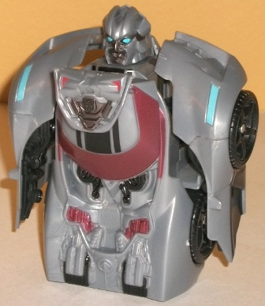
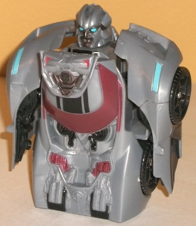

(NOTE: Because this is a repaint, this is not a full-blown review. This mainly covers any changes made to the mold and the color scheme, and merely compares it to the original Gravity Bot Sideswipe. For a review on the mold itself, read the review of the original Gravity Bot Sideswipe here .)
Nitro Sideswipe follows
the same general color scheme as
Strike
Mission Sideswipe
, in that three racing stripes have been added to
the car mode to help break up the colors in that mode a little. It makes
the car mode look considerably more striking. Also like Strike Mission
Sideswipe, Nitro Sideswipe has the N.E.S.T. Global Alliance logo near the
front, and dull metallic red shading used for his windows. The red really
looks snappy, and the light pale blue accents used for the headlights and
eyes in robot mode serve as nice contrast colors to such a "warm" color.
However, unlike Strike Mission Sideswipe, Nitro Sideswipe's base color
plastic has been changed, to a slightly darker, more blusih gray color.
It's amazing how such a small change in the main plastic color makes the
toy look so much better-- although still gray, it's definitely less "blah"
than the original Gravity Bot Sideswipe's light milky gray. Nitro Sideswipe
also has some really nice gunmetal gray paint on his chest and face in
robot mode, which go with the aforementioned bluish gray plastic quite
well. These new paint apps do come at a slight cost, however-- the spokes
of the wheels and the grille of the vehicle mode are left unpainted, as
is the back end of said mode.
No mold changes have
been made to Nitro Sideswipe.
Nitro Sideswipe is a
definite improvement in color scheme over the original Gravity Bot Sideswipe,
with the slightly dulled gray plastic making more of an improvement than
you'd expect, and other changes like the metallic red windows and the black
stripes adding to that improvement. If you already have the original Gravity
Bot, this one isn't different enough to justify another purchase of the
same mold, but if you want one and don't have either version, go for this
one.
Review by Beastbot